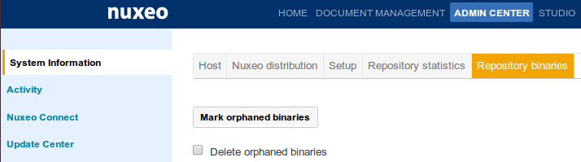

### Orphaned Binaries Management

#### Deleting Orphaned Binaries
##### Binaries are not deleted immediately on document deletion, because:
- Other documents could still reference it !
- And it is costly to check every document for that
##### They can be deleted...
- Manually in Admin, System Information, Repository Binaries
- Through a groovy script
- Using some Java code that can be triggered through a scheduled task or any kind of event
import org.nuxeo.ecm.core.storage.sql.management.RepositoryStatus;
RepositoryStatus status = new RepositoryStatus();
if (!status.isBinariesGCInProgress()) {
status.gcBinaries(true);
}

 ###Sample with PostgreSQL
####Data Backup
- Save db:
###Sample with PostgreSQL
####Data Backup
- Save db: